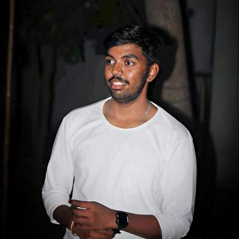

2022
Joined RGUKT Nuzvid - EE
Started EEE at RGUKT Nuzvid. Decided early that understanding systems from first principles mattered more than where I studied.
Robotics & autonomy
Robotics Engineer
From control law to hardware - I build autonomous systems that work in the real world, not just in simulation.

About
Before I built robots, I led people. 200+ volunteers, high-stakes events, fundraising sprints where the scoreboard stayed empty for 50 days straight. That's where I understood something that stuck with me: every human being moves toward comfort. That's not laziness — that's the direction civilisation has always moved. And the technology that wins is always the one that removes friction from that path. That's why I believe automation isn't optional. It's inevitable. And robotics is the layer where that belief becomes physical — where software touches the real world and actually moves things. So I made a decision. I want to build that layer. Not watch it get built. And within robotics, I made a second decision. I chose control. Not because it's the most visible layer — it's usually invisible when it works. But because I believe physical AI without robust control is incomplete. You can have the most capable model in the world, but if the control layer between that model and the hardware is weak, nothing works reliably in the field. That's the gap I want to live in — the place where intelligence meets physics. So I went and built there. Formation control on drones at IIT Mandi when nobody in the lab had done it before. Fault-tolerant control on underwater robots. Production deployment of a real commercial manipulator in Bengaluru with customer-facing quality metrics. Firmware, control pipelines, force control — written from scratch, because the work demanded it. Abhishek, the pattern is simple: I find the gap, I decide to own it, and I don't stop until it works on real hardware.
Milestones
From student leader to hardware engineer - built without a premium lab or a mapped path.
2022
Started EEE at RGUKT Nuzvid. Decided early that understanding systems from first principles mattered more than where I studied.
Nov 2024 - April 2025
Led 200+ volunteers across 18 technical wings. Raised INR 6 lakh in sponsorships through 60 days of cold outreach - 1.5 lakh on day 50, target hit by day 60.
May-July 2025
First person to set up and operate Crazyflie drones in the lab. Built formation tracking from zero with no guidance and no prior implementation to reference.
Sept 2025 - Mar 2026
Owned production quality outcomes on a commercial mobile manipulator. Declined full-time offer to keep building range.
2026
Deliberately choosing environments where ownership is total and the map doesn't exist yet.
Capabilities
Open to early-stage robotics opportunities